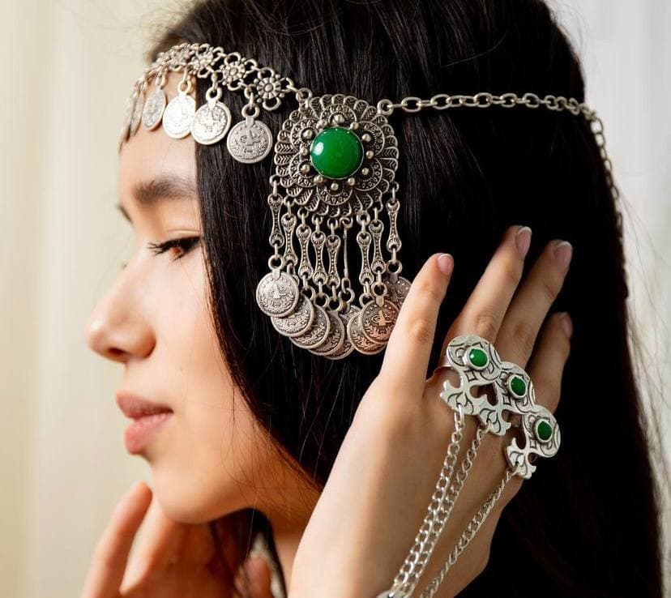
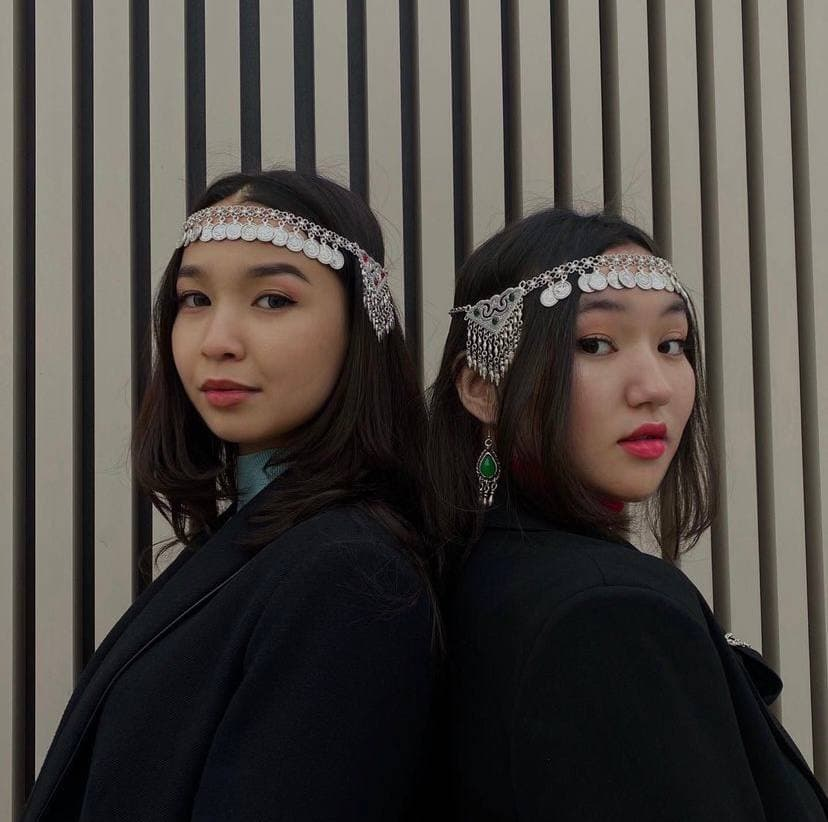

For the loops of the headdress or for the hair in the temporal region, brides wear "shekelik". This is a temporal decoration with pendants, it can be of different shapes (most often petal or triangular). Silver and precious stones are chosen as the material for making such jewelry.